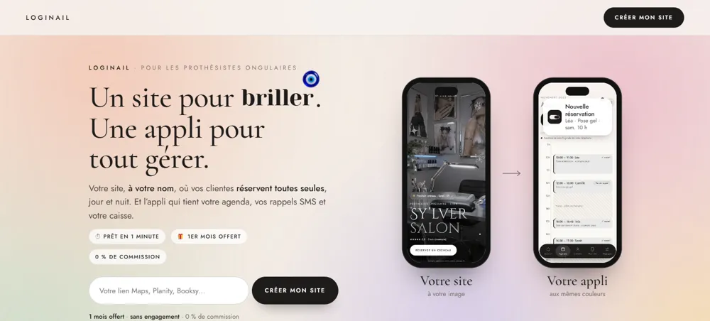
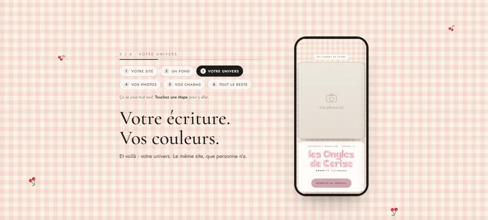
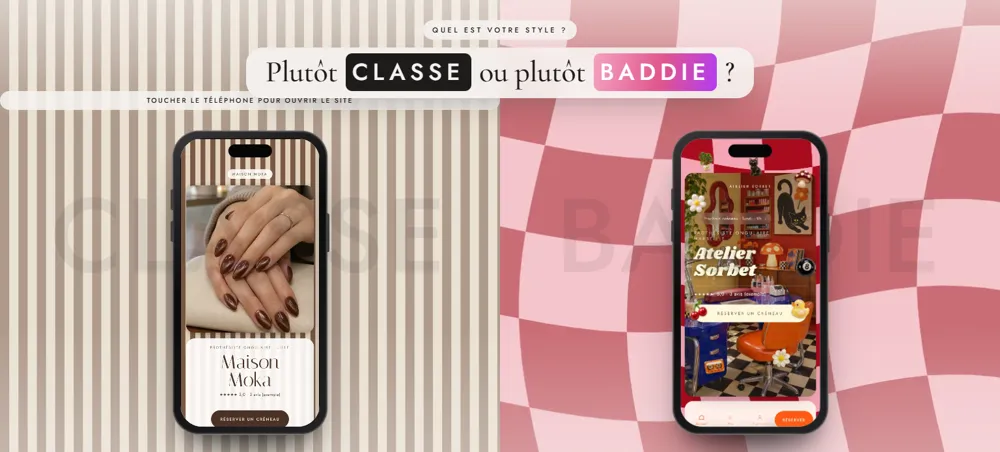
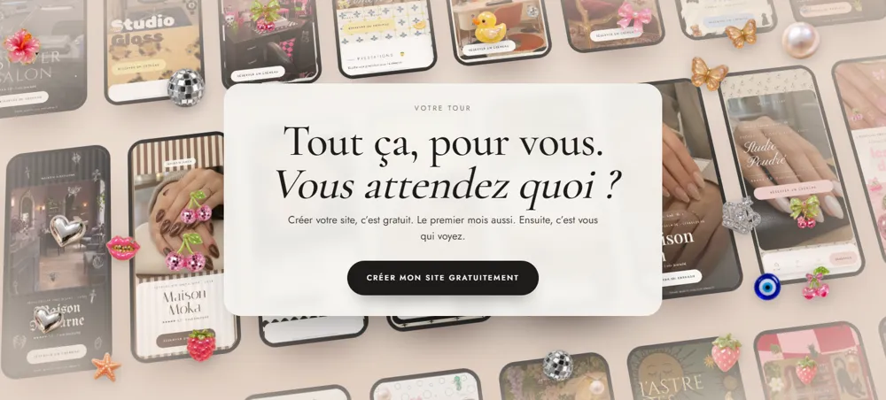

Cinq regards sur loginail.fr : design, marketing, communication, vente, expérience. Pour chaque partie : ce qui est en ligne maintenant, puis d’autres pistes. Dis-moi les numéros qui te plaisent.
Le retour de Lilian est le plus important de tous. Un visiteur doit comprendre en 3 secondes.

Sous le grand titre, une phrase qui dit tout : « Votre site, à votre nom, où vos clientes réservent toutes seules, jour et nuit. Et l’appli qui tient votre agenda, vos rappels SMS et votre caisse. » Puis trois preuves en pastilles : prêt en 1 minute · 1er mois offert · 0 % de commission. Le mot « Loginail » apparaît en haut.
Pour les prothésistes ongulaires. Prêt en 1 minute.
On remplace « Un site pour briller » par un titre qui nomme la chose : le salon, la réservation. Moins poétique, plus clair. Le marketing dit oui, le design dit « on perd le charme ».
Pour : Lilian comprend tout de suite.
Juste sous le titre, une petite ligne vivante : « 23 h 41 · Léa vient de réserver · vous dormiez ». Elle change toutes les 4 secondes. C’est la promesse en une image : ça travaille pour vous.
Pour : l’émotion, la vente.
Dans le téléphone de gauche, on voit le site se créer en direct : le nom se tape, la photo arrive, le bouton « Réserver » apparaît. En 4 secondes, on a compris le produit sans lire.
Pour : montrer plutôt que dire.
Tu n’étais pas sûre du coup de molette. Moi non plus : ça dépend de la main de chacune.

Plus aucune molette. C’est un film qui tourne tout seul, en boucle, pendant qu’on regarde. Les 6 étapes sont des chapitres cliquables au-dessus du texte : on touche « Vos charms », le téléphone y va. La page n’est plus bloquée : on descend quand on veut.
Un vrai chrono tourne en haut (0:00 → 1:00) pendant le film. À la fin : « 1 minute. Votre site est prêt. » Le titre devient littéral.
Pour : la promesse « 1 minute » devient visible.
À l’étape « Un fond », on montre 4 fonds cliquables sous le texte. La visiteuse touche, le téléphone change. Elle a déjà commencé à personnaliser… sans avoir créé de compte.
Pour : l’expérience ; elle joue, donc elle reste.
La question en haut, au milieu. Les mots en majuscules. Les noms de salons ont disparu.

« Quel est votre style ? Plutôt CLASSE ou plutôt BADDIE ? », centré en haut. Le mot CLASSE / BADDIE est écrit en très grand, en filigrane, derrière chaque téléphone. Les machines à sous tournent toujours, avec le fond qui défile avec le téléphone. Plus de « Maison Moka · Amande ».
Un grand téléphone au milieu et un interrupteur CLASSE ⟷ BADDIE. On touche : toute la section bascule d’un coup (fond, téléphone, couleur), avec un balayage. Plus simple, plus lisible, plus « waouh ».
Pour : le design ; une seule chose à regarder.
Classe à gauche, baddie à droite, séparés par une ligne qu’on tire à la souris. On la glisse vers la droite : la classe prend toute la place. On la ramène : la baddie revient. Les deux téléphones défilent toujours.
Pour : l’expérience ; on joue avec.
Question 2 sur 3
Trois petites questions à choix (« Vos clientes repartent avec… », « Votre salon, c’est… », « Votre couleur… »). À la fin : « Vous êtes plutôt CLASSE » et le téléphone montre un site classe. Ça s’appelle un quiz, et ça marche très fort sur Instagram.
Pour : le marketing ; on garde la visiteuse 30 secondes de plus.
Tu demandais quoi ajouter. Voilà ce que la table propose.
À gauche : « sur un annuaire », une liste où votre salon est coincé entre 12 concurrents. À droite : « sur votre site », il n’y a que vous. C’est la raison n° 1 de quitter les annuaires, montrée en une image.
Pour : la vente ; l’argument le plus fort du produit.
Après que la recherche s’est tapée toute seule, un doigt touche « Réserver un créneau », et le téléphone à côté montre le créneau pris : « Samedi 10 h · Léa · confirmé ». La boucle est bouclée : cherchée → trouvée → réservée.
Pour : la communication ; on voit le résultat.
Un grand chiffre : « 38 % des réservations se font après 20 h, quand le salon est fermé. » Attention : ce chiffre doit être vrai. Il faudra le mesurer sur tes premières clientes, ou l’écrire en « (exemple) » en attendant. On ne l’invente pas.
Pour : le marketing ; les chiffres rassurent.
Les fonds en transparence n’étaient pas assez jolis. Changé.

Plus de motifs. Derrière la carte, un mur de vrais sites faits avec Loginail, incliné en perspective comme une galerie, dans une lumière chaude beige-rosée. Ça défile doucement, les charms flottent devant. C’est la preuve : « regardez tout ce qui existe déjà ».
Le fond, c’est une très belle photo d’ongles en plein écran, qui change en fondu toutes les 5 secondes (tes photos d’exemple : nude, french, cerises…). La carte au milieu. Simple, chic, très « beauté ».
Pour : le design ; l’émotion du métier.
Un fond de couleurs douces (rose, doré, lilas) qui bougent lentement, et trois grands téléphones qui flottent et tournent légèrement, comme en apesanteur. Moins chargé que le mur.
Pour : le design ; respiration, légèreté.
Collez votre lien, et votre site s’écrit.
Si la visiteuse a déjà collé son lien Google plus haut, on connaît le nom de son salon : la carte dit « Tout ça, pour les Ongles d’Emma. » C’est la phrase la plus personnelle du site.
Pour : la vente ; personnel = convaincant.
« Créer mon site » en haut, « Créer mon site · 1 mois offert » au milieu, « Créer mon site gratuitement » en bas : trois phrases différentes. On choisit une seule : « Créer mon site · 1 mois offert ». La répétition vend.
Tout est marqué « exemple » : c’est honnête, mais ça ne rassure pas. Dès ta première vraie cliente, on met son témoignage, avec sa photo et son accord écrit. Une seule vraie phrase vaut dix exemples.
49,99 € par mois, c’est aussi 1,64 € par jour. Moins qu’un café. On l’écrit sous le prix. C’est vieux comme le monde, et ça marche toujours.
Sur ordinateur, la barre du haut (LOGINAIL · Créer mon site) reste pendant les animations. On la fait disparaître quand on descend, revenir quand on remonte. Plus d’air pour les téléphones.
Les cartes ont des coins à 22, 24, 26 et 30 px. On met partout le même (26 px) et les boutons à 99 px. Ce sont des détails que personne ne nomme, mais que tout le monde sent.
Rappel : mentions légales, confidentialité et CGV doivent être en ligne avant la première inscription payante, et le bandeau cookies si on ajoute Instagram ou de la pub. Je te le redirai au moment du lancement.